Matplotlib Basics#
Table of Contents#
Intro-to-matplotlib#
Import libraries#
import pandas as pd
import numpy as np
import matplotlib
import matplotlib.pyplot as plt
# will be rendered inline.The plots are static PNG images and embedded into the notebook file
%matplotlib inline
A simple plot#
x = np.linspace(-np.pi, np.pi, 256)
cos, sin = np.cos(x), np.sin(x)
plt.plot(x,sin)
plt.plot(x,cos)
[<matplotlib.lines.Line2D at 0x2e2c4867b10>]
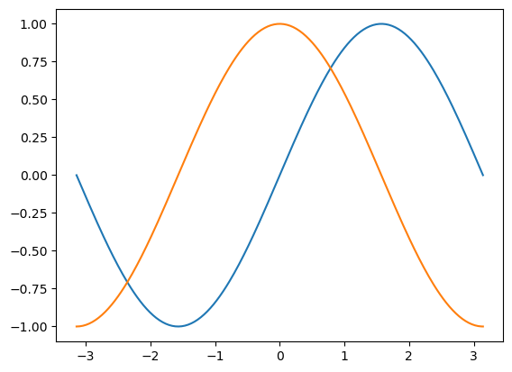
The interface #
The pyplot interface Use pyplot to automatically create and manage the figures and axes
The object-oriented interface Explicitly create figures and axes, and call methods on them
Pyplot#
matplotlib.pyplot is a collection of functions that make matplotlib work like MATLAB. Each pyplot function makes some change to a figure: e.g., creates a figure, creates a plotting area in a figure, plots some lines in a plotting area, decorates the plot with labels.
# create sine and cos functions
x = np.linspace(-np.pi, np.pi, 256)
cos, sin = np.cos(x), np.sin(x)
# Simple one plot
plt.plot(x, sin, label='Sine')
plt.plot(x,cos, label='Cosine')
plt.legend()
<matplotlib.legend.Legend at 0x2e2c1290980>
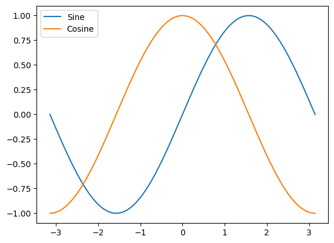
# Multiple plots
plt.subplot(211) # 2 rows one column, 1st plot
plt.plot(x, sin, label='Sine')
plt.xlabel('x')
plt.ylabel('Sine')
plt.legend()
plt.title('Sine')
plt.subplot(212) # 2 rows one column, 2nd plot
plt.plot(x,cos, label='Cosine')
plt.title('Sine and Cosine')
plt.xlabel('x')
plt.ylabel('Cosine')
plt.legend()
plt.title('Cosine')
plt.suptitle('Sine and Cosine')
plt.show()
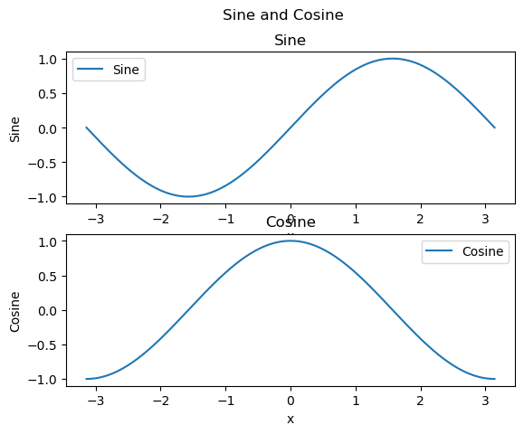
plt.subplot(3,2,1)
plt.plot(x,sin)
[<matplotlib.lines.Line2D at 0x2e2c4c2c690>]
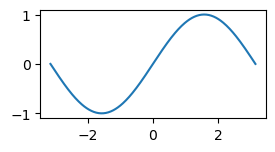
The object-oriented interface#
# Note that even in the OO-style, we use `.pyplot.figure` to create the figure.
fig, ax = plt.subplots() # Create a figure and an axes.
ax.plot(x, x, label='linear') # Plot some data on the axes.
ax.plot(x, x**2, label='quadratic') # Plot more data on the axes...
ax.plot(x, x**3, label='cubic') # ... and some more.
ax.set_xlabel('x label') # Add an x-label to the axes.
ax.set_ylabel('y label') # Add a y-label to the axes.
ax.set_title("Simple Plot") # Add a title to the axes.
ax.legend() # Add a legend.
<matplotlib.legend.Legend at 0x2e2c4c5fc50>
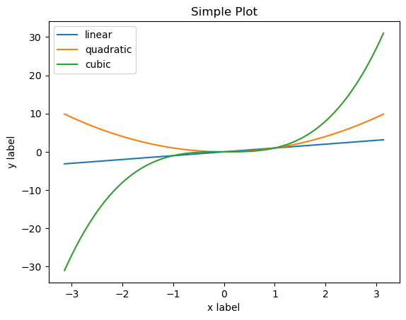
fig, (ax1,ax2) = plt.subplots(2,1)
ax1.plot(x, sin, label='Sine')
ax1.set_ylabel('Sine')
ax2.plot(x, cos, label='Cosine')
ax2.set_ylabel('Cosine')
ax2.set_xlabel('x')
Text(0.5, 0, 'x')
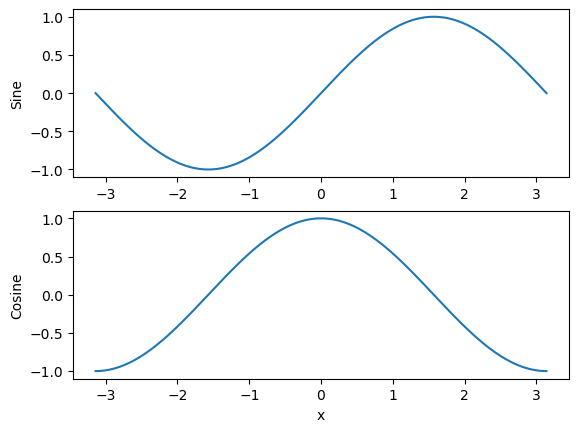
Parts-of-a-Figure#
{kind=link}
Figure#
The figure keeps track of all the child Axes
fig = plt.figure() # an empty figure with no Axes
fig, ax = plt.subplots() # a figure with a single Axes
fig, (ax1, ax2) = plt.subplots(2,1) # a figure with two rows one column
fig, axs = plt.subplots(2, 2) # a figure with a 2x2 grid of Axes
axs[0,0].plot(x, sin)
axs[1,0]
axs[0,1]
axs[1,1]
fig, axs = plt.subplots(2, 2, figsize=[15, 10]) # a figure with a 2x2 grid of Axes
<Figure size 640x480 with 0 Axes>
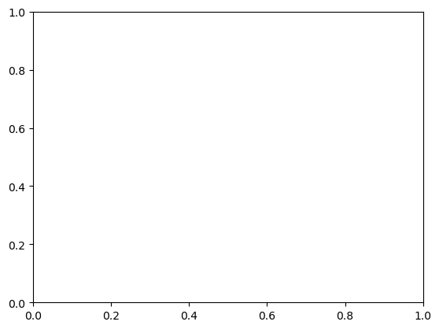
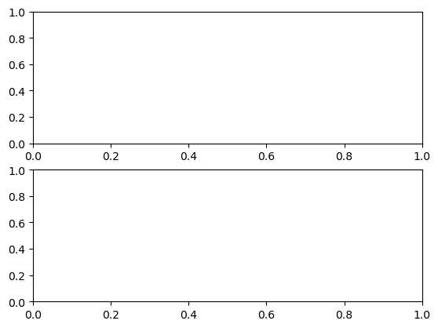
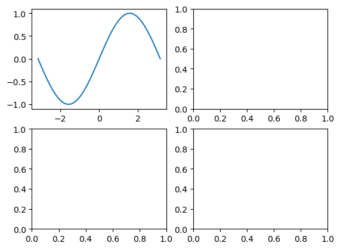
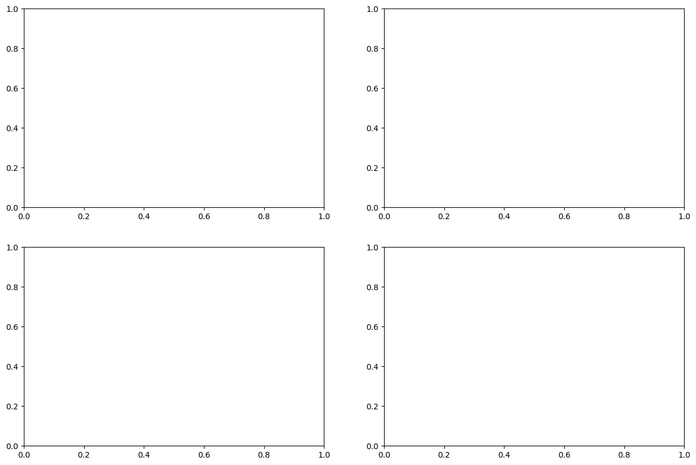
Pyplot styles#
# evenly sampled time at 200ms intervals
t = np.arange(0., 5., 0.2)
fig = plt.figure(figsize=[10,7])
# red dashes, blue squares and green triangles
plt.plot(t, t, 'r--', t, t**2, 'bs', t, t**3, 'g^')
plt.show()
#plt.savefig('fig1.png')
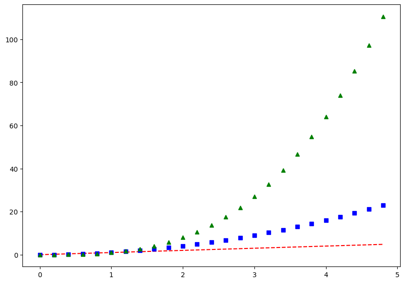
fig, ax = plt.subplots(2,2, figsize=[15,5])
ax[0,0].plot(t, np.sin(t), marker='*',markersize=10, markerfacecolor='white', markeredgecolor='r', label='sin')
ax[0,1].plot(t, np.cos(t), label='cos',linestyle='-.', linewidth=20,)
ax[1,0].scatter(t, np.sin(t), marker='2')
ax[1,1].scatter(t, np.cos(t), marker='s')
#ax.set_aspect('equal')
ax[1,1].legend(loc=0)
ax[1,1].set_xlabel('x')
ax[1,1].set_ylabel('Sine')
#plt.savefig('foo1.png')
C:\Users\Wenge\AppData\Local\Temp\ipykernel_22984\1412221731.py:7: UserWarning: No artists with labels found to put in legend. Note that artists whose label start with an underscore are ignored when legend() is called with no argument.
ax[1,1].legend(loc=0)
Text(0, 0.5, 'Sine')
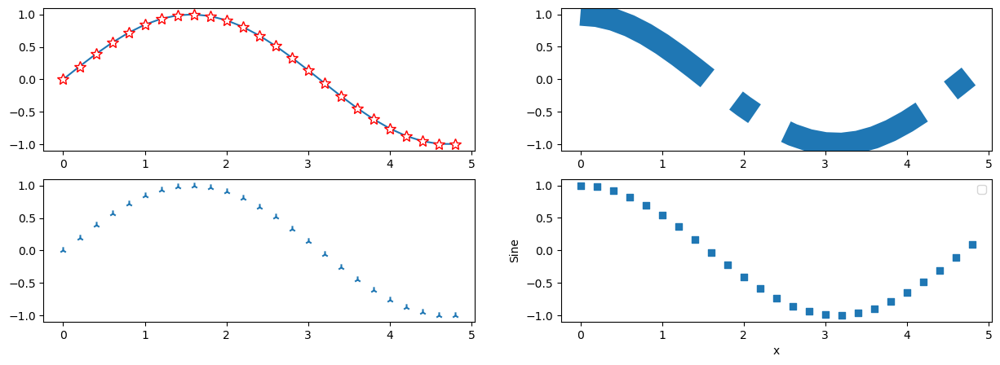
Customizing matplotlib#
Customizing matplotlib with rcParams
data = np.random.randn(50)
plt.plot(data)
[<matplotlib.lines.Line2D at 0x2e2c613f890>]
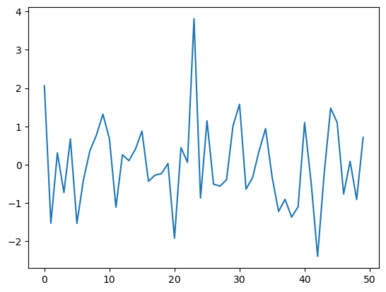
If you want modify your own style gobaly to the following parameters#
axes.titlesize : 24 axes.labelsize : 20 lines.linewidth : 3 lines.markersize : 10 xtick.labelsize : 16 ytick.labelsize : 16
import matplotlib as mpl
mpl.rcParams['axes.titlesize'] = 24
mpl.rcParams['axes.labelsize'] = 30
mpl.rcParams['lines.linewidth'] = 2
mpl.rcParams['lines.linestyle'] = (0, (1,1))
mpl.rcParams['lines.markersize'] = 10
mpl.rcParams['xtick.labelsize'] = 10
mpl.rcParams['ytick.labelsize'] = 10
plt.plot(data)
[<matplotlib.lines.Line2D at 0x2e2c61d5e50>]
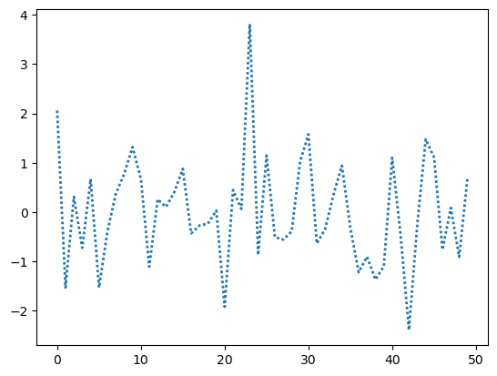